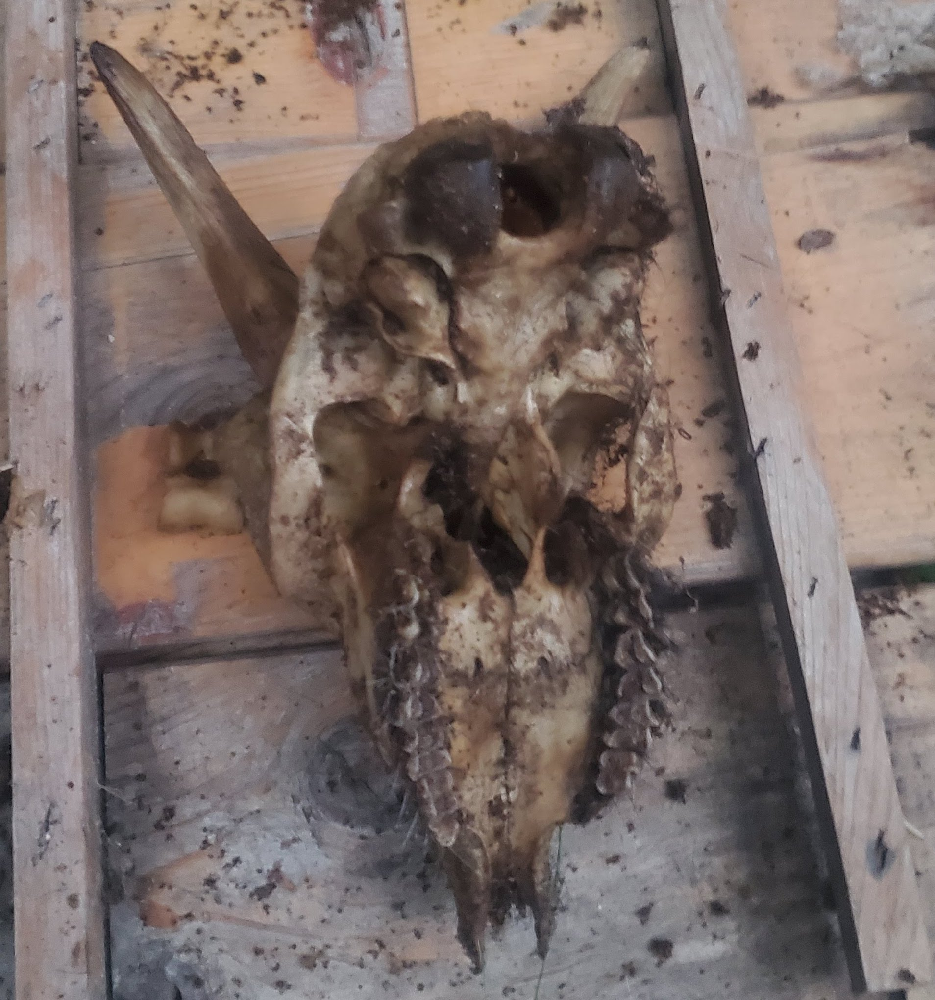

|
Bones are everywhere. All around us, inside us, and sometimes in animals too. After taking care of goats and eating one of them, I had a lot of bones to work with. Here's how I processed a goat skull. |
|||
|---|---|---|---|
|  | |||
|
When in doubt, leave it out! Processing animal bones is actually pretty straightforward. You can simply put your rotting carcass into a bucket of wood chips and/or shavings, poke some holes in the bottom for drainage, add a brick on top to keep predators out, and let it sit for several warm months. |
Don't forget to brush your teeth... Once you've let the carcass sit for a while, it's ready for degreasing and whitening! |
||
|
Ammonia and Hydrogen Peroxide That's all there is too it. The rest of the flesh should macerate and fall off as the bones sit in the ammonia for a month or two, to start the degreasing process After that, you'll use some decent gloves to transfer the bones to a hydrogen peroxide solution, and let it sit for a while again. The hydrogen peroxide can be watered down, but will add additional time to the whitening process. |
|||
|
And that's all there is to it! Simply repeat those steps at any point if needed. Some flesh might be remaining underneath the teeth, but will eventually rot out. The bones can also be cleaned at the end by letting them dry out in borax. |
|||
 |
|||